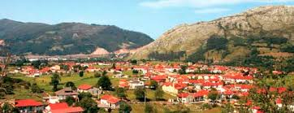

Los Corrales de Buelna |
|
| Teatro | Los Corrales de Buelna es un municipio y localidad española de Cantabria asentado junto en la cuenca del río Besaya a 12 kilómetros de la ciudad de TorrelavegaEstudiantesWeb de los estudiantesContacta con nosotros indicando su número |